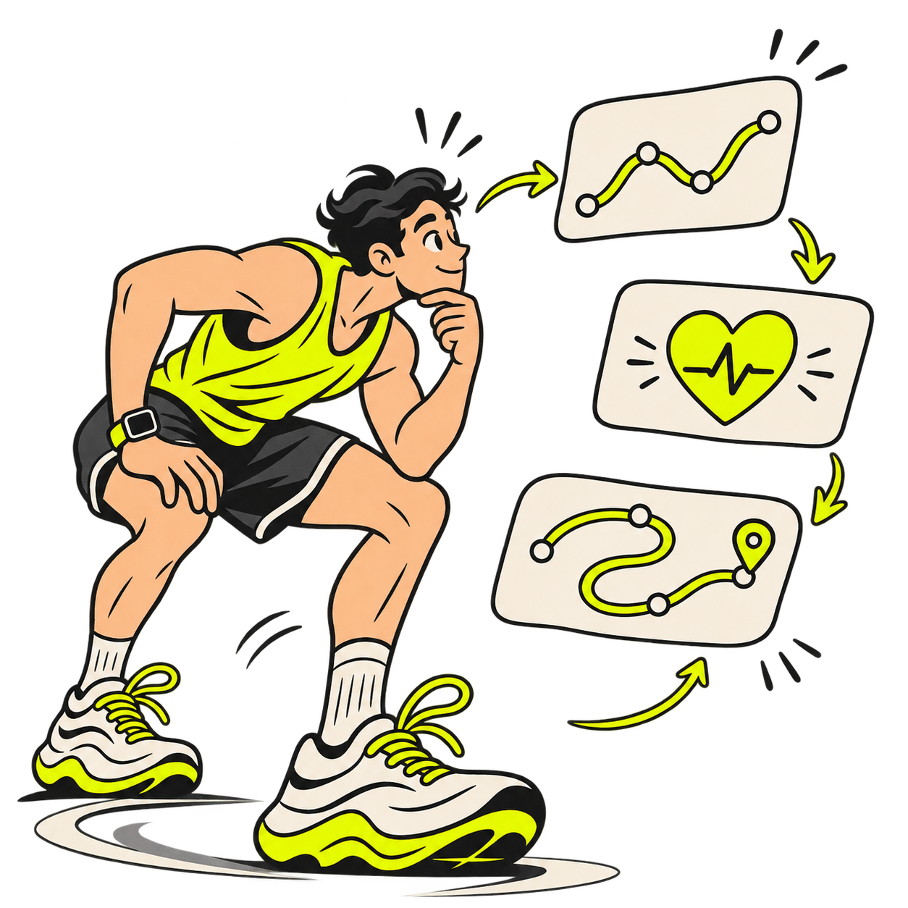
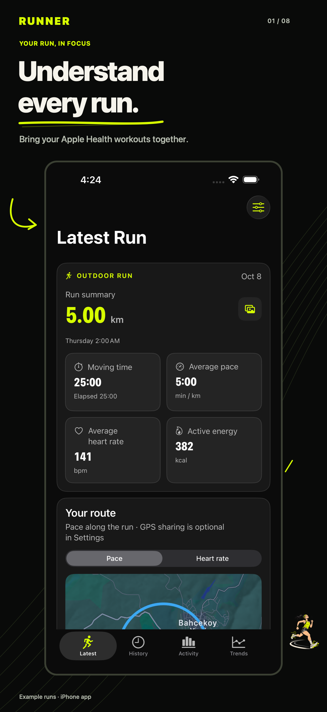
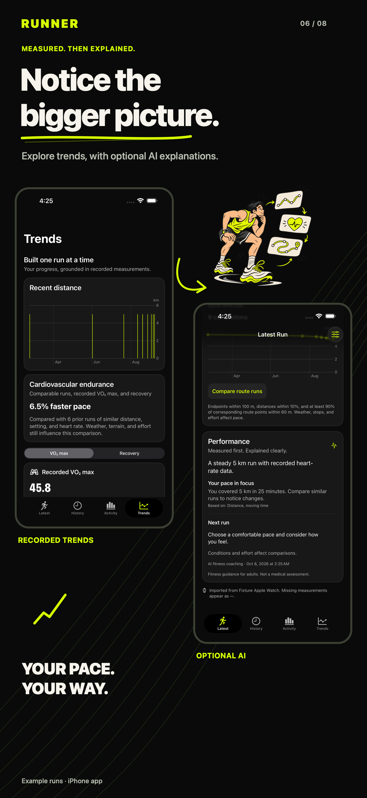
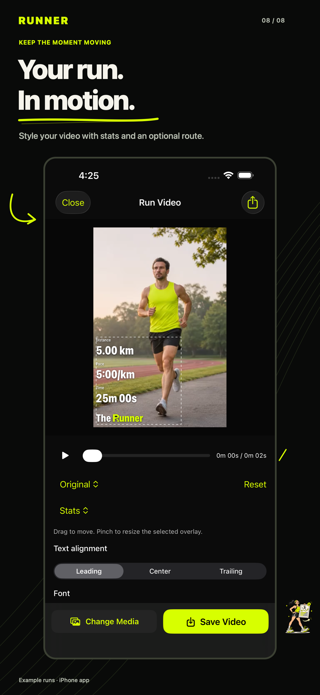
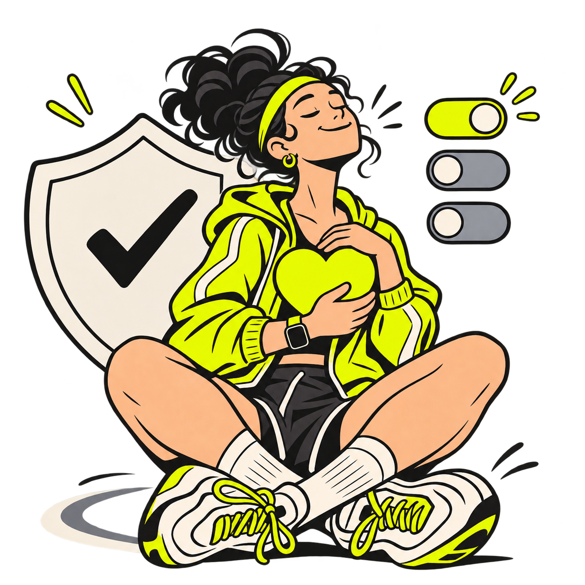

Every run has a story. Understand yours.
Bring your Apple Health runs into focus. Explore the numbers, notice your progress, and turn the finish into something worth sharing.
View on the App Store ↗Version 1.0 is being prepared for release. Free on iPhone.
The run ends. The insight starts.
Your recorded pace, heart rate, splits, and routes belong together. Runner helps you explore them without turning missing measurements into made-up numbers.
- Import Apple Watch and other running workouts stored in Apple Health.
- Inspect recorded samples and compare similar routes.
- Use measured statistics without an account.

A routine you can see.
One run is a moment. A history is a pattern. Bring your weeks, goals, and measured trends into the same view.
- Review activity totals, your training calendar, and recurring goals.
- Explore comparable runs, recorded VO₂ max, and recovery measurements.
- Choose optional AI explanations after sign-in and separate consent.
Make the finish yours.
Put your distance, pace, time, and optional route onto a photo or video from your iPhone. Adjust the look, export, and choose where it goes.
- Create portrait, square, Story, or original-size compositions.
- Style and position your stats, route, and app icon.
- Edit on your device; Runner does not upload your media to its services.
A closer look



Screenshots use synthetic sample runs and generated media. Results and available measurements depend on your recordings.
PRIVATE BY CHOICE
Your data. Your decisions.
Health access is your choice. AI analysis, cloud history, and precise GPS sync each have separate controls. You can keep your measured running experience on your iPhone.
Privacy policy ↗
Requires iOS 26 or later and running workouts in Apple Health. GPS routes and individual metrics depend on the source recording. AI is optional, for adults 18+, subject to availability and daily limits, and is fitness coaching rather than medical advice.